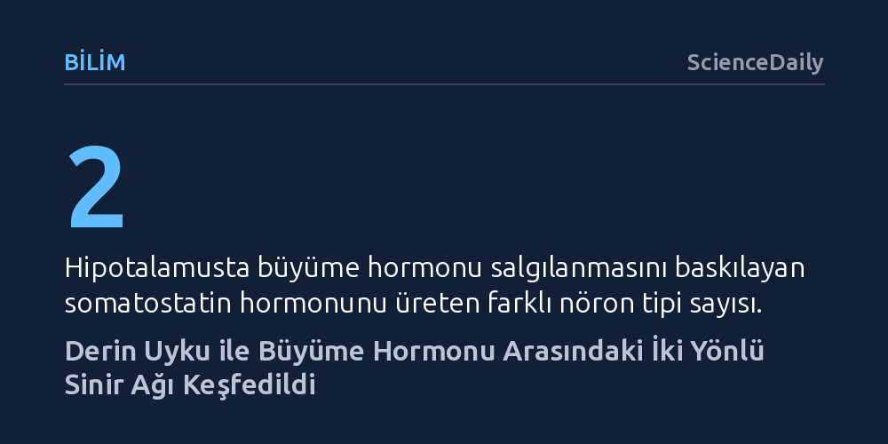

BILIM · ScienceDaily · 2026-10-18
Araştırmacılar, derin uykuda büyüme hormonu salgılanmasını tetikleyen ve biriken bu hormonun beyin sapını uyararak uyanmayı sağladığını gösteren iki yönlü bir sinir devresi keşfetti. Bu bulgu, uykusuzluğun kas, yağ metabolizması ve zihinsel performansı neden doğrudan bozduğunu hücresel düzeyde açıklıyor.
Uykunun yalnızca pasif bir dinlenme süreci değil; kas onarımı, yağ yakımı ve uyanıklık dengesini bizzat idare eden iki yönlü ve aktif bir sinirsel kontrol mekanizması olduğunu gösteriyor.

Geceleri kaliteli bir uyku çekmenin bedeni zinde hissettirmekten çok daha derin biyolojik etkileri bulunur. Özellikle derin uyku evresinde vücut; kas kütlesinin inşasını destekleyen, kemikleri güçlendiren ve yağ dokularının enerjiye dönüştürülmesini düzenleyen büyüme hormonunu yoğun biçimde salgılar. Ergenlik döneminde boy uzaması için vazgeçilmez olan bu kimyasal haberci, yetişkinlikte de doku onarımı ve metabolik dengenin korunması açısından hayati bir işlev üstlenir. Yetersiz ya da kalitesiz uykunun büyüme hormonu üretimini baltaladığı ve zamanla obezite, diyabet ve kalp-damar hastalıkları riskini artırdığı tıp dünyasında uzun süredir bilinmekteydi.
Buna karşılık, beynin derinliklerinde bu sürecin tam olarak hangi mekanizmayla kontrol edildiği şimdiye kadar aydınlatılamamıştı. Bilim insanları uykunun büyüme hormonuyla ilişkisini bugüne dek yalnızca uyuyan deneklerden belirli aralıklarla kan örnekleri alarak ve hormon düzeylerindeki dalgalanmaları izleyerek takip edebiliyordu. Ancak beynin derin, onarıcı ve rüyasız evresi olan non-REM uykusu sırasında hangi sinir ağlarının devreye girdiği ve hipofiz bezine ne zaman hormon salgılaması gerektiğini kimin söylediği bir sır olarak kalmıştı. California Üniversitesi (Berkeley) araştırmacılarının yürüttüğü yeni çalışma, bu biyolojik kara kutuyu aralayarak hormon üretimi ile uyanıklık dengesi arasındaki şaşırtıcı sinir devresini ilk kez doğrudan haritalandırdı.
Araştırmacılar, beynin derinliklerinde yer alan ve açlıktan vücut sıcaklığına, uyku döngülerinden hormonal salgılara kadar temel yaşam fonksiyonlarını idare eden hipotalamus bölgesine odaklandı. Hipotalamusta büyüme hormonu üretimini yöneten iki zıt güç bulunmaktadır: Hormon salınımını tetikleyen GHRH nöronları ve salınımı baskılayarak fren işlevi gören somatostatin nöronları. Normal şartlarda bu iki haberci zıt yönlerde çalışarak hipofiz bezinden kana ne kadar hormon karışacağını hassas bir dengede tutar.
Çalışma ekibi, beyinlerine elektrotlar yerleştirilen farelerde ışıkla nöron uyarımı (optogenetik) yöntemini kullanarak sinir hücrelerinin anlık faaliyetlerini kaydetti. Farelerin gün içine dağılmış birkaç dakikalık kısa uyku döngüleri, uyku ile uyanıklık arasındaki geçiş anlarında nöronların nasıl davrandığını defalarca gözlemleme imkânı sundu. Elde edilen veriler, bu iki zıt hormonun uyku evrelerine göre tamamen farklı stratejiler izlediğini ortaya koydu.
Rüyaların görüldüğü REM uykusu sırasında hem GHRH hem de somatostatin nöronlarının etkinliği aynı anda artış gösteriyor ve bu eşgüdümlü hareket büyüme hormonu salgısını destekliyor. Derin dinlenmenin gerçekleştiği non-REM uykusunda ise mekanizma değişiyor: Baskılayıcı somatostatin nöronları frenden ayağını çekerek etkinliğini belirgin şekilde azaltırken, GHRH nöronları ılımlı bir yükselişe geçiyor. Böylece beyin, iki ayrı uyku evresinde birbirinden tümüyle farklı hücresel kombinasyonlar kullanarak aynı yaşamsal hormonun salgılanmasını güvence altına alıyor.
Araştırmanın en beklenmedik bulgusu, bu ilişkinin tek taraflı işlememesi oldu. Uyku yalnızca büyüme hormonu salgılanmasını tetiklemekle kalmıyor; kanda ve beyinde biriken büyüme hormonu da geri bildirim sinyalleri göndererek beynin uyanma zamanını doğrudan etkiliyor. Gece boyunca derin uykuda yükselen hormon seviyeleri, beyin sapında dikkat, tetikte olma ve çevreyi keşfetme güdüsünü yöneten locus coeruleus adlı sinir çekirdeğini uyarıyor. Bu çekirdeğin hareketlenmesi, canlının uykudan uyanıklığa yumuşak bir geçiş yapmasını sağlıyor.
Sistem bu noktada son derece hassas bir evrimsel dengeyle çalışıyor. Locus coeruleus nöronlarının orta düzeyde uyarılması zihinsel canlılığı ve uyanıklığı desteklerken, aşırı uyarılmaları tam tersi bir etkiye yol açabiliyor. Araştırmacıların daha önceki çalışmalarında tespit ettiği bu paradoksal duruma göre, söz konusu merkez aşırı aktif hale geldiğinde uyanıklık yerine ani bir uyku haline neden olabiliyor. Bu durum, organizmanın iç dengesini koruyan homeostaz mekanizmasının ne kadar dar bir aralıkta kusursuz işlemesi gerektiğini kanıtlıyor. Çalışmanın ortak yazarlarından Daniel Silverman bu döngüyü şöyle açıklıyor: "Uyku büyüme hormonu salgısını tetiklerken, büyüme hormonu da geri bildirimle uyanıklığı düzenler."
Keşfedilen bu geri bildirim döngüsü, uykunun yalnızca kas ve iskelet sistemini onarmakla kalmayıp uyanınca sergilediğimiz bilişsel performansı da neden belirlediğini gösteriyor. Locus coeruleus bölgesi odaklanma, öğrenme ve zihinsel uyanıklığın ana merkezi olduğundan, derin uykuda salgılanan büyüme hormonunun bu merkezi beslemesi, sabahları dinç uyanmanın ardındaki biyolojik sırrı oluşturuyor. Büyüme hormonunun yetersiz salgılandığı ya da uyku mimarisinin bozulduğu kronik uykusuzluk durumlarında neden metabolik çöküşle birlikte konsantrasyon kaybı yaşandığı da bu sayede netleşiyor.
Bu hücresel harita, gelecekte diyabet ve obezite gibi metabolik rahatsızlıklarla el ele giden uyku bozukluklarının yanı sıra, Parkinson ve Alzheimer gibi nörodejeneratif hastalıklar için de yeni tedavi kapıları aralayabilir. Özellikle belirli nöron gruplarını hedef alan gen terapileriyle locus coeruleus'un aşırı uyarılabilirliğini dizginlemek gelecekte mümkün olabilir. Yine de araştırmacılar temkini elden bırakmıyor: Deneyler fareler üzerinde gerçekleştirildi ve kemirgenlerin kısa aralıklı uyku düzeni ile insanların kesintisiz gece uykusu arasında fizyolojik farklar bulunuyor. Bu devrenin insan beyninde tam olarak nasıl çalıştığını doğrulamak ve güvenli tedavilere dönüştürmek için kapsamlı klinik araştırmalar gerekiyor.